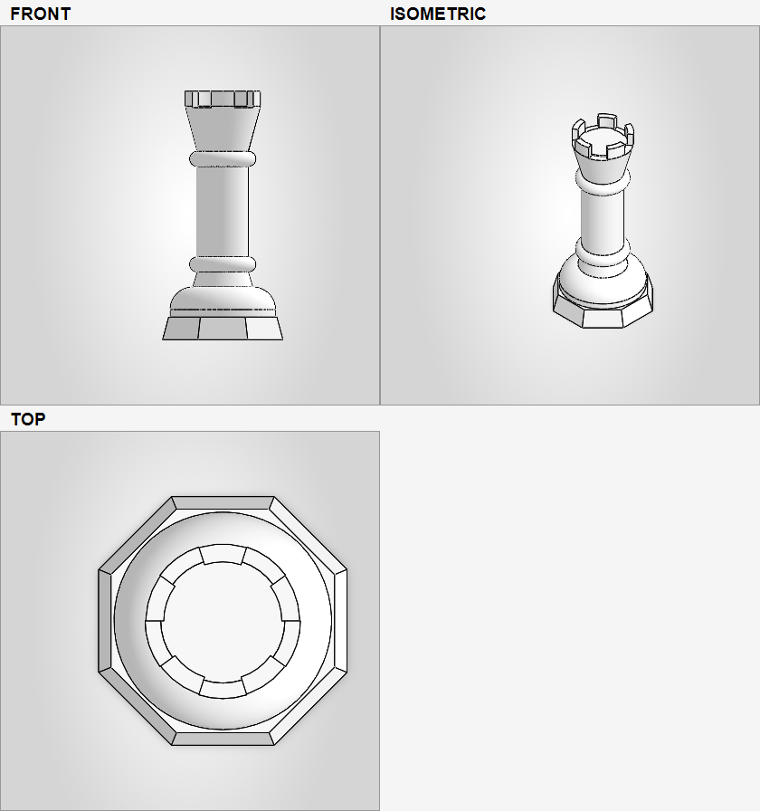

Sketches, extrudes, revolves, booleans, fillets, chamfers, patterns, and first-class Variable Studios.
Build editable geometry and change named dimensions without starting again.
Cloud CAD MCP · Open source
Ultron connects Claude Code to real Onshape documents, combining parametric modelling with structured results, multi-view rendering, and a verify-after-every-change workflow.

A tighter CAD loop
Start from a written brief, dimensions, or a reference image.
Create sketches and parametric features in the real Onshape document.
Structured mutation results expose changes, warnings, and regeneration failures.
Render multiple views, compare geometry, and refine the next operation.
Roughly 60 tools
Build editable geometry and change named dimensions without starting again.
Return front, top, right, and isometric views so the AI can inspect its work.
Load a drawing or photo, crop into features, and compare it with the current model.
Place instances, create supported mates, align components, and check bounding boxes.
Use custom features when the normal modelling surface is not expressive enough.
Inspect entities and mass properties, then export common CAD and mesh formats.
See bounding-box, part-count, and mass changes with recovery hints for known failures.
Before you connect
Ultron uses your Onshape account and API credentials to work with documents you choose. Credentials should stay in the operating-system keychain and never appear in a public issue.
Open the complete setup guide →Access to the documents you want to use.
A developer-portal key pair with appropriate access.
Desktop or CLI with plugin support.
The Python project and MCP server runtime.
Support and development
For a useful report, include the failing tool, compact response, expected result, and a safe document or minimal reproduction. Remove API credentials and private document details first.